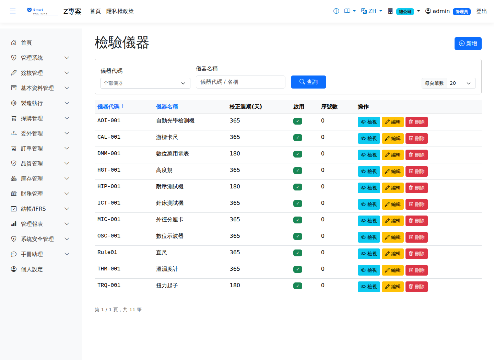

檢驗儀器Inspection Instruments
路由：/Instrument | 量測儀器與校正週期管理Route: /Instrument | Measuring instruments and calibration interval management
維護檢驗儀器基本資料、校正週期與到期提醒；逾期未校正的儀器於檢驗時提示警告。Maintains the basic data, calibration interval and due reminders for inspection instruments; an instrument overdue for calibration raises a warning when it is used.

檢驗儀器畫面截圖（示意，實際欄位/資料依權限與查詢條件而異）Inspection instrument screenshot (illustrative; actual fields and data vary by permission and query criteria)
查詢Search
1
查詢列輸入條件後點「查詢」；欄位標題可點擊排序，清單下方有分頁導航。Enter your criteria on the query bar and click "Search"; column headers can be clicked to sort, and the paging controls sit below the list.
作業流程Process
校正管理Calibration management
1
點「新增」建立儀器：編號、名稱、校正週期。Click "Add" to create an instrument: number, name and calibration interval.
2
每次校正完成後回寫校正日期，系統自動計算下次到期日。Enter the calibration date each time one is done and the system works out the next due date.
欄位說明Field reference
查詢條件Query criteria
| 條件Condition | 說明Guide |
|---|---|
| 儀器代碼 / 儀器名稱Instrument code / Instrument name | 各自關鍵字模糊比對each a partial keyword match |
欄位Field
| 欄位Field | 說明Guide |
|---|---|
| 儀器代碼Instrument Code | 必填Required 唯一識別，建立後不可修改Unique identifier; cannot be changed after creation |
| 儀器名稱Instrument Name | 必填Required 量測儀器的名稱（如三次元、卡尺）Name of the instrument (CMM, calipers …) |
| 校正週期(天)Calibration Cycle (Days) | 兩次校正的間隔天數；系統據此推算下次校正到期日並提醒Days between calibrations; the system works out the next due date from it and sends a reminder |
| 校正方式Calibration Method | 內校或外校，以及校正依循的方法說明In-house or external calibration, and a note on the method followed |
| 啟用Active | 停用後不可在檢驗規範與檢驗作業中選用Once inactive, it cannot be chosen in inspection specs or during inspection |
| 序號數Serial Count | 此儀器型號下已登錄的實體序號數量；校正紀錄以個別序號管理Number of physical serial numbers registered under this instrument model; calibration records are kept per serial number |
| 備註Notes | 補充說明Notes |